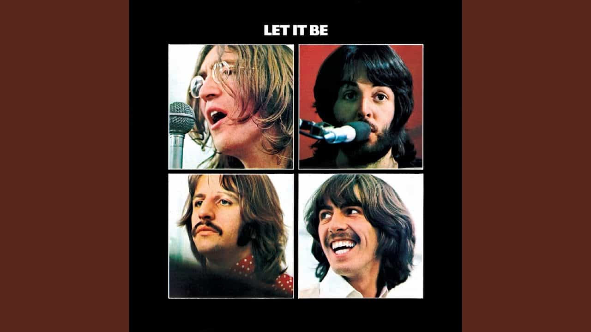

Let It Be
Largely assembled prior to the band's split in early 1970, Let It Be marks the twelfth and final album released by the Beatles. The recording process for the project spanned multiple years and was nothing if not arduous, with George Harrison temporarily leaving the group. However, it did come together (no pun intended) and for me, stands as a solid if not slightly disappointing farewell project for the band. Memorable tracks such as the gorgeously composed and written Across The Universe, lead single Get Back, and Dig A Pony stand out, but as a whole the project is far from their best effort sonically. The title track marks a sentimental and simple goodbye from Paul on an important album in the band's history and one greatly illuminated by the Get Back documentary released in 2021 that shows the album's recording.
Two Of Us - 3:36
Dig A Pony - 3:55
Across The Universe - 3:48
I Me Mine - 2:25
Dig It - 0:50
Let It Be - 4:03
Maggie Mae - 0:40
I've Got A Feeling - 3:37
One After 909 - 2:53
The Long And Winding Road - 3:38
For You Blue - 2:32
Get Back - 3:09